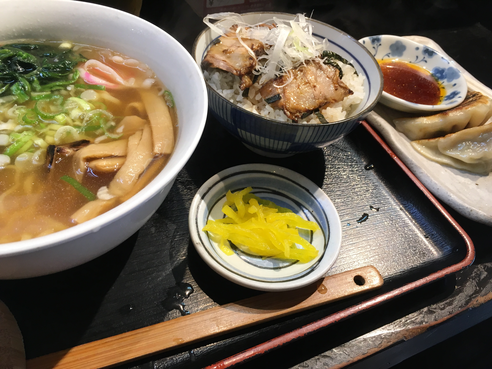
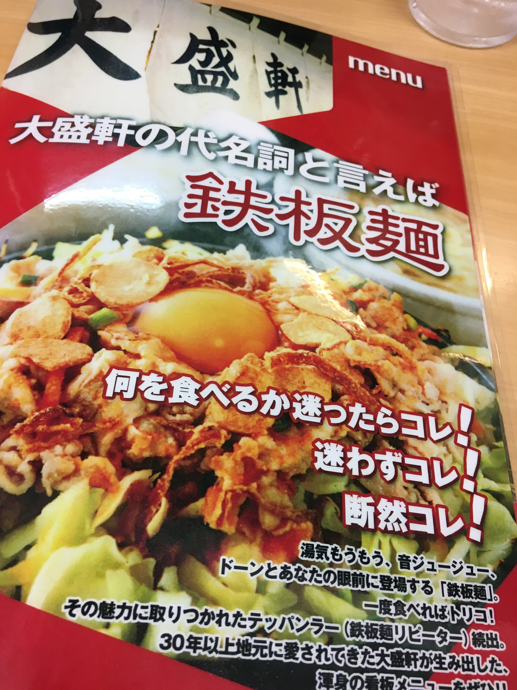
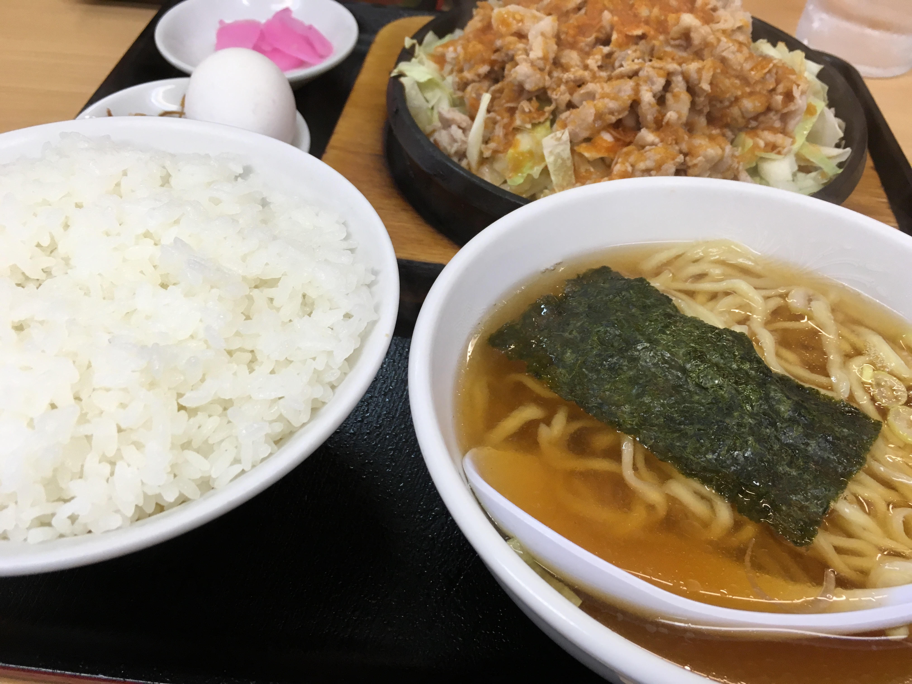
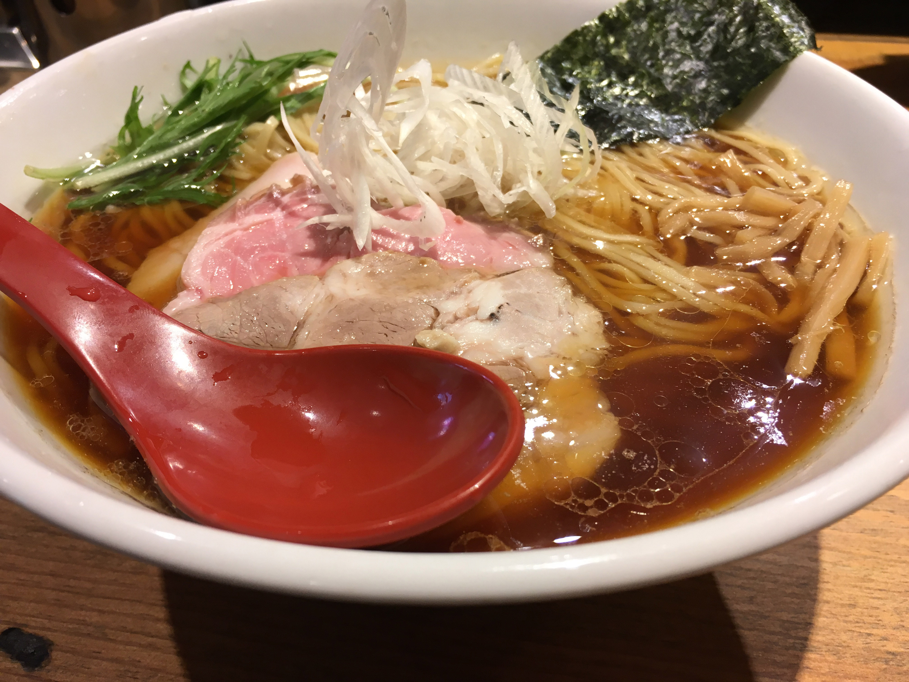

ŧ‹"ŧ‹"ŧ‹"ŧ‹"(๑´ㅂ`๑)ŧ‹"ŧ‹"ŧ‹"ŧ‹"
■楓家
とくとくセット（ハーフ醤油ラーメン＋ハーフ餃子＋ハーフチャーシュー丼＋小鉢orデザート）
750円

かつお風味のあっさりスープに、しっかりしたチャーシューで絶妙のバランス。
日替わり小鉢orデザートが選べて、デザートは柔らかな味わいの自家製プリンが！
どれもとっても美味しくて量もあるので、満足度は高いですよ～
■大盛軒


麺家ばく
キッチン ドナルド
パームツリー
※番外編： 麺屋 翔＠新宿西口
